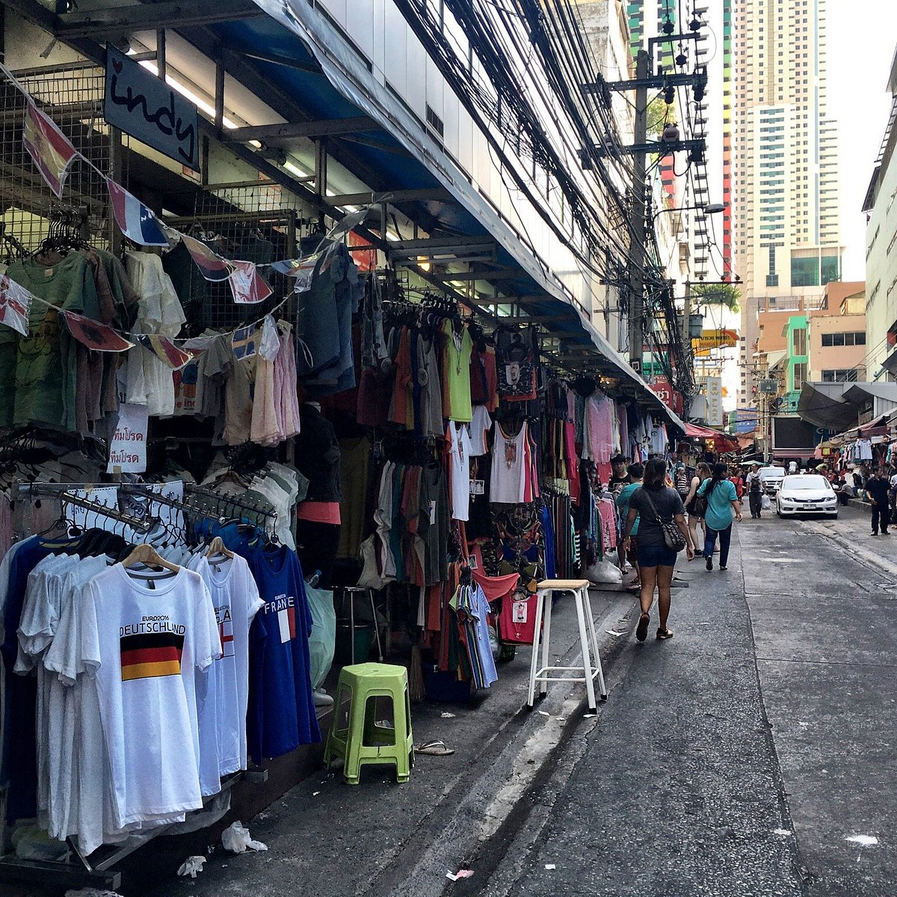

6 ประตูน้ำ
ประตูน้ำ เป็นหนึ่งในย่านช้อปปิ้งหลักของ กรุงเทพ และในฐานะที่เป็นที่ตั้งของตลาดเสื้อผ้าที่ใหญ่ที่สุดของประเทศไทย ที่นี่จึงเป็นจุดหมายปลายทางสำหรับนักช้อปที่มองหาเสื้อผ้าราคาประหยัด ประตูน้ำ หาค่อนข้างง่ายเพราะอยู่ใกล้ โรงแรมใบหยกสกาย ซึ่งเป็นอาคารสูงตั้งตระหง่าน 88 ชั้น ประตูน้ำ ขึ้นชื่อเรื่องร้านขายส่ง สินค้าแฟชั่น และตลาดริมทาง นอกจากนี้ยังมีห้างสรรพสินค้า ตลาด และศูนย์การค้าไม่น้อยกว่า 10 แห่งในละแวกใกล้ๆ กับ ประตูน้ำ ซึ่งแต่ละแห่งก็เต็มไปด้วยร้านขายเสื้อผ้า รองเท้า กระเป๋า และแม้แต่สิ่งทอในราคาสุดคุ้ม ไปถึงที่แล้วก็ไม่ควรพลาด แพลตตินั่มแฟชั่นมอลล์ และ ตลาดประตูน้ำ สำหรับผู้ที่ชอบแกดเจ็ตและอุปกรณ์อิเล็กทรอนิกส์ ต้องไปที่ พันธุ์ทิพย์พลาซ่า และอย่าลืมว่าร้านค้าต่างๆ ในย่าน ประตูน้ำ สามาถต่อรองราคาได้